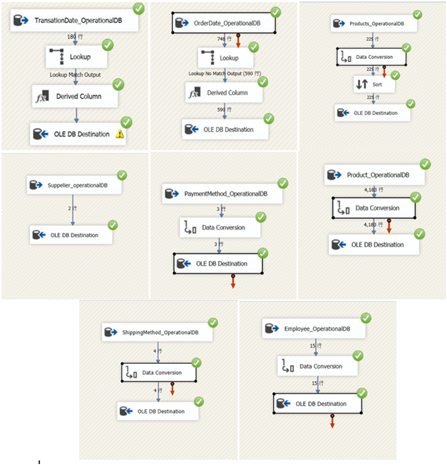
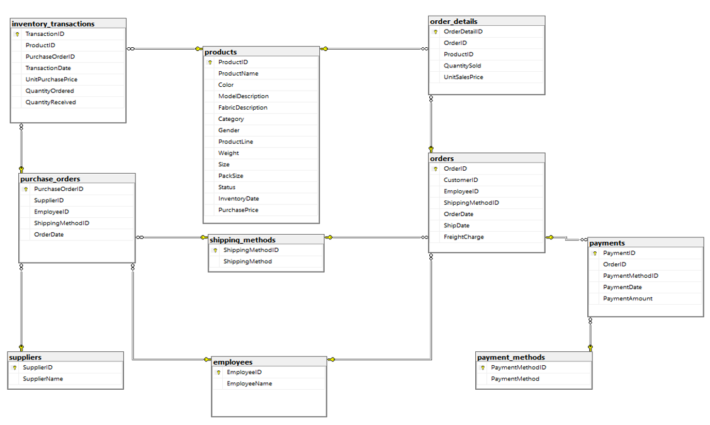
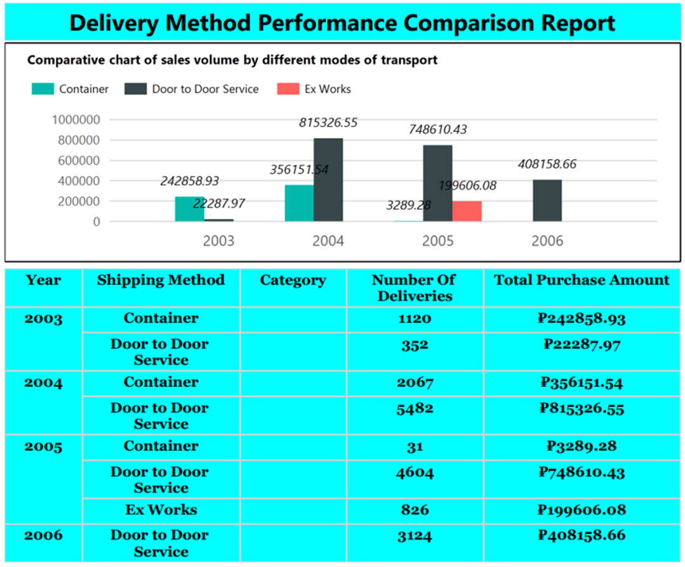

Project Overview
This project involved building a comprehensive data warehouse for a Russian underwear trading company. The project leveraged ETL processes, SQL Server, SSRS, and Tableau to extract, transform, and load data for in-depth business analysis and reporting.
Project Details
ETL Process Implementation
Implemented using SQL Server Integration Services (SSIS), the ETL process ensured efficient and accurate data transfer, from extraction to loading into the data warehouse. Various data sources were integrated, including sales records, payment information, and customer details.
Data Warehouse Design
The data warehouse was designed using a star schema with two core fact tables and several dimension tables. This structure facilitates efficient data storage and retrieval, supporting advanced business analytics.
Business Intelligence and Reporting
Reports generated using SQL Server Reporting Services (SSRS) provided insights into sales trends, procurement strategies, and supplier performance. Additionally, Tableau visualizations offered a real-time view of business performance, aiding in decision-making.
Report on the analysis process
Click on the link below to download the full analytical process report for a detailed look at the implementation process and analytical details of the Data Warehouse and BI project.
Download Analytical Process Report